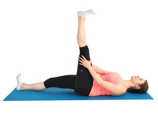
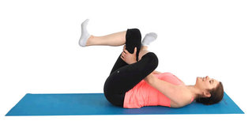

Six Very Important Stretches for Runners
1. Hamstrings Stretch

This stretch should be performed while lying down on your back with one of your legs straight up in the air,
the other leg should be bent with your foot flat on the ground while grabbing the back of your leg with both of your hands.
You should pull your leg towards yourself gently while making sure both hips are kept on the floor.
This stretch should be held for 10-30 seconds. Repeat on opposite leg.
2. Quadriceps Stretch
Stand upright, holding onto something for balance if required.
Your feet should be kept hip-width apart, your back should be straight with your feet in a parallel position.
Hold your left foot in your left hand, keeping your thighs in line next to each other and left leg in line with the hip.
Hold this position for 10-30 seconds. Repeat for opposite leg.
3. First Piriformis Stretch

This stretch should be performed by lying on your back with both of your legs fully extended and having your back in a straight position.
Your hips should be kept level and with your lower back flat on the floor.
Your left knee should be bent, with your left foot in a flat position on the floor.
Your right ankle should be crossed over your left knee.
Grabbing the back of the left thigh and squeeze thigh like in a hugging position with your legs towards your chest.
Your right elbow should be placed on the inner portion of your right knee while pushing it slightly to the side.
Hold this position for 10-30 seconds. Repeat on opposite side.
4. Second Piriformis Stretch
This stretch should be performed by lying on your back with both of your legs fully extended
and having your back in a straight position. Your hips should be kept level and with your lower back flat down on the floor.
Your right knee should be bent towards your chest while grabbing it with your left hand. Place your right hand out to the side.
Your shoulder blades should be kept square using your left hand to guide your right knee across your body and
towards the floor on your left side. Hold this position for 10-30 seconds. Repeat on opposite side.
5. Calf Stretch
This stretch is performed by standing facing a wall, about 12 inches away from the wall.
Your arms should be extended in front of your shoulders and placing your two hands flat on the wall, with your elbows kept bent.
Keeping both feet flat, stepping or sliding your left foot back, while lengthening your left leg and your arms straightened.
The more your lower your heel to the floor, and the farther you slide your straight leg behind you, the deeper you will feel this stretch.
Holding for 10-30 seconds and switching sides.
6. Iliotibial (IT) Band Stretch
This stretch is performed by standing tall with the left side of your body next to a wall
and with your hand on the wall and your body an arm and quots length away from the wall.
Crossing your right leg in front of your left leg and place your opposite hand on your hip, shoulders relaxed,
feet flat on the floor. Breathe slowly and steadily as you push your left hip toward the wall, bending your left elbow.
Keep the foot closest to the wall flat on the floor, both legs straight, and your back straight.
Holding this stretch for 10-30 seconds and switching sides.
For further information about stretching before running you can visit
www.coolrunning.com
Back to Top